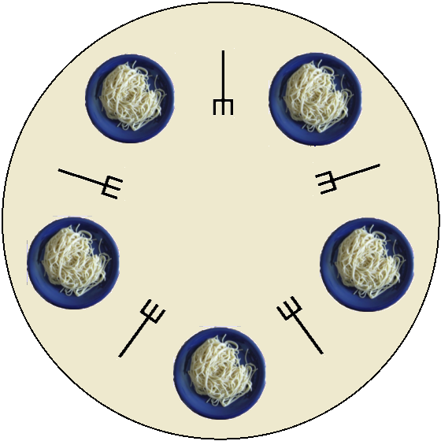

class: center, middle, title-slide ## CSCI 340 Operating Systems <br> ## Chapter 7: Synchronization Problems .author[ Stewart Weiss<br> ] .license[ Copyright 2020 Stewart Weiss. Unless noted otherwise all content is released under a [Creative Commons Attribution-ShareAlike 4.0 International License](https://creativecommons.org/licenses/by-sa/4.0/). ] --- name: cc-notice template: default layout: true .bottom-left[© Stewart Weiss. CC-BY-SA.] --- name: tinted-slide template: cc-notice layout: true class: tinted --- name:toc ### Table of Contents [Prerequisite Reading](#prereqs)<br> [About This Chapter](#about-chapter)<br> [Chapter Objectives](#objectives)<br> [The Bounded Buffer Problem](#bounded-buffer-def)<br> [What Makes This Problem Different?](#bb-versus-pc)<br> [Problem Statement](#bounded-buffer-setup)<br> [Semaphore Initialization](#bounded-buffer-semaphores)<br> [Producer and Consumer Code](#bounded-buffer-solution)<br> [The Readers-Writers Problem](#readers-writers-overview)<br> [An Observation About Asymmetry](#asymmetry)<br> [Readers-Writers: Solution Development](#development-1)<br> [Writer Arrivals](#development-3)<br> [Reader Arrivals](#development-4)<br> [Alternative Preference Problems](#development-5)<br> [Required Data Structures](#development-6)<br> [Algorithms: The Writer Process](#development-6)<br> [Algorithms: The Reader Process](#development-7)<br> [Correctness](#correctness)<br> [Reader-Writer Locks](#rwlocks)<br> [The Dining Philosophers Problem: Background](#dining-philosophers-background)<br> [The Dining Philosophers Problem Statement](#dining-philosophers-statement-1)<br> --- ### Table of Contents [A Naïve Solution Using Semaphores](#dining-philosophers-sem-1)<br> [A Deadlock-Free Solution](#dining-philosophers-better-1)<br> [Why No Deadlock?](#dining-philosophers-sem-3)<br> [The Complete Program](#code)<br> [The Complete Program](#code)<br> [Synchronization in the Early Linux Kernel](#linux-synch-early)<br> [Synchronization in the Modern Linux Kernel](#linux-synch-current-1)<br> [Spinlocks in Linux](#linux-synch-current-2)<br> [Mutexes in Linux](#linux-synch-current-2)<br> [Semaphores in Linux](#linux-sems)<br> [Summary of Locking in Linux](#linux-summary)<br> [POSIX Synchronization](#posix-synch)<br> [POSIX Mutex Locks](#posix-synch-2)<br> [POSIX Semaphores](#posix-synch-3)<br> [POSIX Named Semaphores](#posix-synch-3)<br> [POSIX Unnamed Semaphores](#posix-synch-4)<br> [POSIX Condition Variables](#posix-synch-4)<br> [POSIX Condition Variable Example](#posix-synch-5)<br> [References](#references)<br> <!--TOC_END--> --- name: prereqs ### Prerequisite Reading Before reading these slides, you should be familiar with - Processes and concurrency ([Chapter 3](chapter03.html)) - Threads and the POSIX Threads API ([Chapter 4](chapter04.html)) - Process synchronization tools and primitives ([Chapter 6](chapter06.html)) --- name: about-chapter ### About This Chapter Certain synchronization problems arise so frequently in the design and implementation of concurrent systems that they deserve to be identified and studied. Some synchronization problems are noteworthy because their solutions are interesting. In this chapter, we explore three such problems: .lightbluebox[ - The Bounded Buffer problem - The Readers-Writers problem(s) - The Dining Philosophers problem ] We also explore synchronization in the __Linux__ kernel and POSIX synchronization tools. As we did in Chapter 6, we use the terms "process" and "thread" interchangeably, --- name: objectives ### Chapter Objectives Having read and understood the content of this chapter, you should be able to - describe and provide correct solutions to the bounded buffer problem; - describe various forms of the readers-writers problem and describe correct solutions to them; - describe the dining philosophers problem and describe solutions to it that may not satisfy all desirable liveness properties; - describe different methods used in the __Linux__ kernel to synchronize processes executing kernel code; - identify parts of the Pthreads API that can be used to implement solutions to synchronization problems; --- name: bounded-buffer layout: false class: center, middle, inverse ## The Bounded Buffer Problem We begin with the __Bounded Buffer Problem__, which is a generalization of the single producer-single consumer problem described in Chapter 3. --- template: tinted-slide layout: true --- name: bounded-buffer-def ### The Bounded Buffer Problem In Chapter 3 we introduced the .bluebold[Producer Consumer Problem], stated in terms of a single producer and a single consumer. In that problem, there was a shared, finite size pool of buffers. The producer process could write data into an empty buffer, and the consumer process could read data from a full buffer. .center[ <img src="figures/prodconsumer.png" width=70% alt="producer-consumer"> ] The problem was how to design the producer and consumer so that, in their exchange of data, no data is lost or duplicated, data is read by the consumer in the order it is written by the producer, and both processes make as much progress as possible. We presented both .redbold[shared memory] and .redbold[message-passing] solutions. -- The more general version of this problem allows for any number of producer and consumer processes, all of which access a shared, finite size pool of buffers, subject to the same criteria of correctness. It is called the .bluebold[Bounded Buffer Problem]. .redbold[Here we provide only a shared memory solution using semaphores.] --- name: bb-versus-pc ### What Makes This Problem Different? Recall that the producer repeatedly executed a loop body of the form ```C next_item = produce_new_item();/* produce an item and store into next_item */ while (((in + 1) % BUFFER_SIZE) == out) /* keep testing whether buffer is full */ ; /* do nothing until buffer is not full */ /* buffer is not full, so write item into buffer[in] and advance in */ buffer[in] = next_item; in = (in + 1) % BUFFER_SIZE; /* advance in */ } ``` With just a single producer, the instruction ```C in = (in + 1) % BUFFER_SIZE; ``` ensured that .fixedblue[in] was the index of the next available buffer to use in the buffer pool. -- This does not work when there are multiple producers, because it is a .redbold[race condition] on the variable .fixedblue[in]. A similar statement is true about .fixedblue[out] for consumers. -- Therefore, accesses to these variables are critical sections and must be synchronized. In the solution we present here, we use .redbold[semaphores] to achieve this. --- name: bounded-buffer-setup ### Problem Statement We make the following assumptions: - There are .fixedblue[N] buffers, each of which can hold exactly one item. - There are $p \ge 1$ producer processes and $c \ge 1$ consumer processes. - After a producer fills a buffer, the buffer is considered to be .greenbold[full]. - After a consumer reads a buffer, the buffer is considered to be .greenbold[empty]. - .fixedblue[produce_item()] returns an item to be put into a buffer - .fixedblue[consume_item(itemtype item)] consumes .fixedblue[item]. -- We present a solution to this problem that uses one binary semaphore and two counting semaphores. We use the same syntax for semaphore operations that we did in Chapter 6, treating semaphores as objects and their operations as member functions. This syntax does not correspond to a particular implementation of semaphores - it is pseudocode. --- name: bounded-buffer-semaphores ### Semaphore Initialization The semaphores are initialized as follows: ```C int N; /* Number of buffers */ semaphore mutex = 1; /* Binary semaphore, initially unlocked */ semaphore empty = N; /* Number of empty buffers, initially all are empty */ semaphore full = 0; /* Number of full buffers, initially none */ ``` - The .fixedblue[mutex] semaphore provides mutual exclusion for all updates to the buffers. Only one process at a time can modify a buffer. - The .fixedblue[empty] semaphore counts the number of empty buffers. A producer will issue a wait on it. If it is zero, the producer blocks. If not, it is decremented and the producer continues. - The .fixedblue[full] semaphore counts the number of full buffers. A consumer will issue a wait on it. If it is .fixedblue[0], the consumer blocks. If not, it is decremented and the consumer continues. --- name: bounded-buffer-solution ### Producer and Consumer Code .left-column[.left[.smaller[ ```C producer() { itemtype item; /* item produced */ while (true) { /* produce item and store into item */ item = produce_item(); /* wait for an empty buffer */ empty.wait(); /* acquire mutex */ mutex.wait(); /* CS: write item into a empty buffer */ /* release mutex */ mutex.signal(); /* increment number of full buffers */ full.signal(); } } ``` ]]] .right-column[.left[.smaller[ ```C consumer() { itemtype item; /* next item consumed */ while (true) { /* wait for a full buffer */ full.wait(); /* acquire mutex */ mutex.wait(); /* CS: read item from a full buffer */ /* release mutex */ mutex.signal(); /* increment number of empty buffers */ empty.signal(); /* consume item */ consume_item(item); } } ``` ]]] -- .below-column[ - Notice the symmetry of the calls to the counting semaphores - producers wait if there are no empty buffers; consumers wait if none are full. - The code to write into and read from a buffer is not shown. If the pool is an array of buffers, there would still be updates to variables .fixedblue[in] and .fixedblue[out] inside the CS. - The .fixedblue[mutex] semaphore operations provide the mutual exclusion. - If the semaphores use FIFO queues, then bounded waiting is satisfied. ] --- name: readers-writers-intro layout: false class: center, middle, inverse ### The Readers-Writers Problem We explore a pervasive model of inter-process communication known as the __Readers-Writers problem__, which models many concurrent systems of processes in modern computer systems. --- template: tinted-slide layout: true --- name: readers-writers-overview ### The Readers-Writers Problem This problem was originally posed and solved by Courtois, Heymans, and Parnas in 1971. We are given the following conditions: - There are multiple processes, each of which accesses a .redbold[shared data set]; - Each process is either a .bluebold[reader], which means it reads but never modifies the data, or it is a .bluebold[writer], which means it can read and modify the data; - Multiple readers are allowed to access the data concurrently; - If a writer is modifying the data, no other process is allowed any access to it until the writer finishes; .redbold[a writer must have exclusive access to the data.] -- The challenge in the .bluebold[Readers-Writers Problem] is to design algorithms for the readers and writers so that all of the the above constraints are satisfied, and so that the system of processes is free of deadlock and starvation. -- We will develop a semaphore-based solution to this problem. --- name: asymmetry ### An Observation About Asymmetry In this problem, unlike the bounded-buffer problem, there is an asymmetry in access to the shared data set: - Readers do not need to access that data in mutual exclusion of each other. - Writers must have mutual exclusion when accessing the data. This is a form of .bluebold[categorical mutual exclusion]: a process in the .greenbold[reader category] being in the critical section does not exclude other processes in that same category, but the presence of a process in the .greenbold[writer category] in the critical section excludes processes from all categories. As a result of this asymmetry, the reader and writer algorithms will be very different. --- name: development-1 ### Readers-Writers: Solution Development Imagine a room that stores a shared file or dataset. It has an entry door and an exit door. Readers and writers alike must walk through the entry door to gain access to the room, and must leave by the exit door. -- A process cannot enter the room unless it is granted permission to do so. Access control involves a procedure that every process follows when it tries to enter, and another that it follows after it has entered the room and is ready to leave. -- At the entry door there are two queues: - a queue for readers - a queue for writers. If a reader is not allowed to enter the room for one reason or another, it waits in the reader queue. If a writer is not allowed to enter, it waits in the writer queue. --- name: development-2 count: false ### Readers-Writers: Solution Development When a process is granted permission to enter the room, whether it waited in a queue or not, it .greenbold[increments a counter] to indicate that it is entering the room. Because readers and writers have asymmetrical constraints, we need two counters: - a counter for readers - a counter for writers. -- Because only one writer is allowed in the room at a time, the writer counter has just two values: 0 and 1. The reader counter can take on any non-negative value, since there is no limit to the number of readers that can be in the room. -- When a process leaves the room, it .greenbold[decrements the corresponding counter] to indicate that it is leaving the room. This allows the access control system to determine which process is allowed to enter the room next. --- name: development-3 ### Writer Arrivals When a writer arrives, there are only two possibilities: -- - If the room is empty when a writer arrives, it enters the room without waiting. - If the room is not empty and a writer arrives, it must wait in the writer queue until it is given permission to enter. -- It is not possible for the room to be empty and one or more queues to be non-empty because if the room were empty because a process just left it, a process in a queue would be allowed into the room. I.e., if there are waiting processes, they do not delay in entering the room. --- name: development-4 ### Reader Arrivals When a reader arrives there are many more possibilities: -- - If the room is empty and the queues are empty when a reader arrives, it enters the room without waiting. -- - If a writer is in the room and a reader arrives, the reader must wait in the reader queue until it is given permission to enter the room. -- - If a reader is in the room and no writer is waiting, then an arriving reader can enter the room without waiting. -- - If a reader is in the room and one or more writers are waiting, and a reader arrives, then we have a decision to make: - do we make the arriving reader wait in the reader queue until the writers have a turn to enter the room, or - do we let the reader enter the room immediately, making the writers wait until there are no readers in the room? -- - If we allow arriving readers to enter the room .redbold[even though writers may be waiting], it leads to a formulation of the problem known as the .bluebold[First Readers-Writers Problem], also known as the .bluebold[Weak Reader Preference Readers-Writers Problem]. --- name: development-5 ### Alternative Preference Problems The alternative to allowing arriving readers to enter even though writers are waiting is to .redbold[make the arriving reader wait in the reader queue until the writers have a turn to enter the room.] This implies that it is possible for both the reader and writer queues to be non-empty while a process is in the room, whether it is a reader or a writer. -- This in turn implies that when a process leaves the room, we must decide whether to let a reader or a writer into the room. If waiting readers are given priority over waiting writers, we call it a .bluebold[Strong Reader Preference Problem]. Otherwise it is called a .bluebold[Writer Preference Problem]. In these notes, we do not present solutions to either of these forms of the problem. --- name: development-6 ### Required Data Structures We need two counters: a reader counter and a writer counter, which must be incremented and decremented in mutual exclusion. Since the writer counter is either 0 or 1, we use a binary semaphore, .fixedblue[writer_mutex], to count active writers. For the reader counter, we use an ordinary integer variable, named .fixedblue[reader_count], and protect accesses to it using a binary semaphore .fixedblue[reader_mutex]. They are therefore initialized as follows: ```C semaphore writer_mutex = 1; semaphore reader_mutex = 1; int reader_count = 0; ``` No other data structures are needed for the First Reader Writer Problem's solution. --- name: development-6 ### Algorithms: The Writer Process Writers have a very simple form. The binary semaphore .fixedblue[writer_mutex] provides the implicit queuing and the required mutual exclusion. .left-column[ An arriving writer immediately calls .fixedblue[wait] on .fixedblue[writer_mutex]. If .fixedblue[writer_mutex] is unlocked (has the value 1), it becomes locked and the writer enters the room, performs the write, and then signals .fixedblue[writer_mutex] to unlock it upon exit. If .fixedblue[writer_mutex] is locked, the writer is queued on it. ] .right-column[ ```C Writer: while ( true ) { /* try to enter */ writer_mutex.wait(); /* perform write */ /* release the mutex */ writer_mutex.signal(); } ``` ] .below-column[ ] --- name: development-7 ### Algorithms: The Reader Process Readers are more complex. An arriving reader does one thing if there are no readers in the room, and a different thing if there are already readers in the room. .left-column[ Increments and decrements to .fixedblue[reader_count] are critical sections that are executed in mutual exclusion by each reader by - calling .fixedblue[wait] on .fixedblue[reader_mutex], - modifying .fixedblue[reader_count] , and - calling .fixedblue[signal] on it when they are finished. ] .right-column[ ```C Reader: while ( true ) { `reader_mutex.wait();` reader_count += 1; if ( 1 == reader_count ) writer_mutex.wait(); `reader_mutex.signal();` /* perform read */ `reader_mutex.wait();` reader_count -= 1; if ( 0 == reader_count ) writer_mutex.signal(); `reader_mutex.signal();` } ``` ] --- name: development-8 count: false ### Algorithms: The Reader Process An arriving reader that discovers there are no readers currently reading is like a pioneer; it has to pave the way for the readers that will follow its path. .right-column[ ```C Reader: while ( true ) { reader_mutex.wait(); reader_count += 1; `if ( 1 == reader_count )` `writer_mutex.wait();` reader_mutex.signal(); /* perform read */ reader_mutex.wait(); reader_count -= 1; if ( 0 == reader_count ) writer_mutex.signal(); reader_mutex.signal(); } ``` ] -- .left-column[ If, after .fixedblue[reader_count] is incremented, it is 1, there are no readers currently in the room. Hence, - Either a writer is writing or the room is empty. - The reader calls .fixedblue[wait] on .fixedblue[writer_mutex]. If a writer is writing, the reader is blocked. Otherwise the reader enters the room, locking .fixedblue[writer_mutex] and blocking any arriving writer. ] --- name: development-9 count: false ### Algorithms: The Reader Process An arriving reader that discovers there are no readers currently reading is like a pioneer; it has to pave the way for the readers that will follow its path. .right-column[ ```C Reader: while ( true ) { reader_mutex.wait(); reader_count += 1; `if ( 1 == reader_count )` `writer_mutex.wait();` reader_mutex.signal(); /* perform read */ reader_mutex.wait(); reader_count -= 1; if ( 0 == reader_count ) writer_mutex.signal(); reader_mutex.signal(); } ``` ] .left-column[ - If the reader is blocked, since it still holds the lock on .fixedblue[reader_mutex], all subsequently arriving readers "pile up" on the .fixedblue[reader_mutex] queue when they call .fixedblue[wait]. When the writer leaves the room, the reader is unblocked from .fixedblue[writer_mutex], locks it, and signals the .fixedblue[reader_mutex]. All waiting readers will follow, one after the other, into the room, because each of these, after incrementing .fixedblue[reader_count], will find .fixedblue[reader_count] > 1 and will not call .fixedblue[writer_mutex.wait()]. ] --- name: development-10 count: false ### Algorithms: The Reader Process When a reader finishes reading, it decrements the reader count. The last reader out of the room needs to do something different from all previous exiting readers. .right-column[ ```C Reader: while ( true ) { reader_mutex.wait(); reader_count += 1; if ( 1 == reader_count ) writer_mutex.wait(); reader_mutex.signal(); /* perform read */ reader_mutex.wait(); reader_count -= 1; `if ( 0 == reader_count )` `writer_mutex.signal();` reader_mutex.signal(); } ``` ] .left-column[ - After a reader finishes reading, it locks the .fixedblue[reader_mutex] semaphore, and decrements .fixedblue[reader_count]. If .fixedblue[reader_count] is 0, it is the last reader out of the room. This implies that it should allow waiting writers to enter the room, and therefore it signals the .fixedblue[writer_mutex]. If no writers are waiting, it has no immediate effect. If one or more writers are waiting. the first acquires the .fixedblue[writer_mutex] lock and enters the room. ] --- name: correctness ### Correctness Is this solution correct? Does it satisfy the conditions stated initially, as well as progress and bounded waiting? -- 1. It guarantees that writers write in mutual exclusion. -- 2. It guarantees that any number of readers can be reading concurrently. -- 3. It guarantees that processes make progress - if no writer is writing, readers can read immediately, and if no process is reading or writing, writers can write immediately. -- 4. Bounded waiting is not satisfied - a steady stream of readers can prevent a waiting writer from writing. Eliminating this starvation requires changing how arriving readers are treated. --- name: rwlocks ### Reader-Writer Locks The readers–writers problem models so many programming problems that a special type of lock called a .greenbold[reader–writer lock] is provided in many libraries and operating systems. A .bluebold[reader-writer lock] is a lock that can allow multiple readers to enter a critical section or just a single writer to enter. - To acquire a reader–writer lock, the calling process must specify the mode of the lock: - .bluebold[read mode]: the process wants only to read shared data, or - .bluebold[write mode]: the process wants to modify shared data. - A process trying to acquire a reader-writer lock in read mode succeeds if the lock is not held by a writer. - A process trying to acquire a reader-writer lock in write mode succeeds only if no other process, reader or writer, is holding it. The POSIX Threads library, for example, provides a type called a .fixedblue[pthread_rwlock_t], which is a reader-writer lock, as well as many functions that act on locks of that type. The __Linux__ kernel also has several different reader-writer locks. --- name: dining-philosophers-intro layout: false class: center, middle, inverse ### The Dining Philosophers Problem We present and explore solutions to the __Dining Philosophers Problem__, which is an interesting, challenging, and entertaining problem with not that much practical application. There are valuable lessons to be learned from it. --- template: tinted-slide layout: true --- name: dining-philosophers-background ### The Dining Philosophers Problem: Background In 1965, for his course in "Cooperating Sequential Processes", Edsger Dijkstra gave his students a synchronization problem to solve for their final exam, which he named .bluebold[The Problem of the Dining Quintuple].super[1]. The problem was originally stated in terms of tape drives and processes needing access to them. In 1978, Tony Hoare, also a well-known computer scientist (the inventor of quicksort), dubbed the problem the .bluebold[The Dining Philosophers Problem] and the new name stuck.super[2]. .footnote[ 1 Edsger W. Dijkstra, EWD-1000 (PDF). E.W. Dijkstra Archive. Center for American History, University of Texas at Austin.<br> 2 C.A.R. Hoare, "communicating Sequential Processes," _Communications of the ACM, V. 21 (8), August 1978, pp. 666-677. ] -- Over the years, the problem has been embellished and its statement has changed in minor ways, but it is fundamentally the same. --- name: dining-philosophers-statement-1 ### The Dining Philosophers Problem Statement .left-column[ The problem is as follows. Five philosophers, numbered 0 through 4, spend their lives thinking and eating; as if they executed this loop: ```C while (alive) { think; eat } ``` They only eat spaghetti, and the spaghetti is difficult to eat, requiring two forks. A circular table is set with one fork between adjacent plates of spaghetti, a consequence of which is that two neighbors cannot eat at the same time.super[1]. ] .footnote[ 1 Later statements of the problem replace spaghetti with rice, and forks with chopsticks. ] .right-column[ .center[The Philosophers' Table<br><br>  ]] --- name: dining-philosophers-statement-2 count: false ### The Dining Philosophers Problem Statement .left-column[ Philosophers eat only when they are hungry. They have assigned seats at the table, so that, when they are hungry, they sit down at their seats and try to eat. One constraint is that a philosopher can pick up only one fork at a time, and can put down only one fork at a time. It is just like acquiring and releasing resources: it is always done sequentially. Another constraint is that philosophers are independent - they do not interact with their neighbors to coordinate their eating. ] .right-column[ .center[The Philosophers' Table<br><br> ]] --- name: dining-philosophers-statement-3 count: false ### The Dining Philosophers Problem Statement Summarizing, the challenge is to design an algorithm that each philosopher will follow that allows all philosophers to eat, perhaps not as soon as they are hungry but soon thereafter, subject to the following constraints: -- 1. Only one philosopher can hold a fork at any given time (forks are not shareable.) 2. Each must pick up and put down one fork at a time. 3. A philosopher that tries to eat eventually eats. 4. It must be possible for two philosophers to eat simultaneously. -- Condition 3 implies that - .redbold[the solution must be deadlock-free], for if there were any deadlock, it would imply that two or more philosophers tried to eat but will never eat; and - .redbold[there is no starvation], because by definition a process starves if it is trying to acquire a resource that it will never obtain. --- name: dining-philosophers-sem-1 ### A Naïve Solution Using Semaphores A fairly obvious solution that uses semaphores creates a binary semaphore for each fork. Every philosopher tries to pick up the left fork and then the right fork. If a fork is in use, the philosopher waits until it is free. When finished eating, the forks are put down one at a time. There are five shared binary semaphores: ```C semaphore fork[5] = {1,1,1,1,1}; ``` Each philosopher .fixedblue[i], for .fixedblue[i= 0,...,4], executes the following code: ```C Philosopher(i): while ( true) { fork[i].wait(); /* pick up right fork */ fork[ (i + 1) % 5 ].wait(); /* pick up left fork */ eat(); /* eat spaghetti until satisfied */ fork[i].signal(); /* put down right fork */ fork[ (i + 1) % 5 ].signal(); /* put down left fork */ think(); /* think until hungry again */ } ``` -- .redbold[Is this correct?] --- name: dining-philosophers-sem-2 count: false ### A Naïve Solution Using Semaphores It satisfies constraints 1 and 4, but nothing more: It is not deadlock-free. Consider what happens when each philosopher picks up their right fork at the exact same time, i.e., that they all execute ```C fork[i].wait(); ``` before any of them execute ```C fork[ (i + 1) % 5 ].wait(); ``` Each is now holding their right fork and waiting on the semaphore for the left fork. All will wait indefinitely because their left fork is the right fork of their neighbor to the left. -- .redbold[Is there a deadlock-free solution using semaphores?] -- Yes. We present a solution due to Andrew Tanenbaum.super[1]. .footnote[ 1 Tanenbaum, Andrew S. __Operating Systems Design and Implementation__. Prentice-Hall, Inc., 1987. ] --- name: dining-philosophers-better-1 ### A Deadlock-Free Solution This solution does not deadlock. It uses a single binary semaphore .fixedblue[mutex] to control updates to the critical sections that need to be executed in mutual exclusion. It also uses an array of five semaphores .fixedblue[S[5]] that is initially locked, i.e. set to 0. There is one semaphore for each philosopher. Every philosopher can be in one of three .greenbold[states of being]: .fixedblue[HUNGRY], .fixedblue[THINKING], or .fixedblue[EATING]. The algorithm tracks these in an array .fixedblue[state[5]]. As before, philosopher .fixedblue[i] repeatedly thinks, picks up two forks, eats, and puts down the two forks. Logically philosopher .fixedblue[i] does the following: ```C while ( true ) { think; pickup_forks(i); eat; putdown_forks(i); } ``` But the structure of the functions to pick up and put down forks is very different than in the previous solution. --- name: dining-philosophers-better-2 count: false ### A Deadlock-Free Solution Picking up two forks may not succeed. If Philosopher .fixedblue[i] determines that she is unable to pick up both forks (because a neighbor has one of them), then she puts herself into a waiting state on semaphore .fixedblue[S[i]]. .red[Only a neighboring philosopher will be able to lift her from this waiting state by signaling that semaphore.] The function to pick up forks is designed to .redbold[test whether eating can be done] and update the state of the philosopher accordingly: ```C void pickup_forks(int i) { mutex.wait(); /* lock CS */ `state[i] = HUNGRY;` /* I am hungry! */ `test_if_can_eat(i);` /* test if I can eat */ mutex.signal(); /* unlock CS */ S[i].wait(); /* decrement S[i] -if I can eat I will not block */ } ``` In the highlighted critical section, philosopher .fixedblue[i] sets her state to .fixedblue[HUNGRY] and calls .fixedblue[test_if_can_eat(i)]. In .fixedblue[test_if_can_eat(i)], if neither neighbor is eating, her state is set to .fixedblue[EATING] and .fixedblue[S[i]] is incremented, so that when she calls .fixedblue[S[i].wait()], she does not block. --- name: dining-philosophers-better-3 count: false ### A Deadlock-Free Solution Any philosopher can call .fixedblue[test_if_can_eat()], passing the index of any other philosopher, to check if that philosopher can eat. In the function below, .fixedblue[left(i)] returns the left neighbor of .fixedblue[i] and .fixedblue[right(i)] returns the right neighbor of .fixedblue[i]. ```C void test_if_can_eat(int i) { if (state[i] == HUNGRY && state[left(i)] != EATING && state[right(i)] != EATING) { state[i] = EATING; S[i].signal(); /* is able to eat, so increment S[i] so i cannot block on it */ } } ``` If Philosopher .fixedblue[i] is hungry and neither neighbor is eating, her state is changed to .fixedblue[EATING] and her semaphore is signaled. Incrementing the semaphore is done so that when she calls .fixedblue[S[i].wait()] she will not block. .redbold[This does not mean she is eating!] It means she will be able to eat as soon as she exits .fixedblue[pickup_forks()]. If either neighbor of .fixedblue[i] is eating, the if-condition is false and the semaphore .fixedblue[S[i]] is not signaled. Philosopher .fixedblue[i] will block when calling .fixedblue[S[i].wait()]. --- name: dining-philosophers-better-3 count: false ### A Deadlock-Free Solution The last piece of the algorithm is the .fixedblue[put_forks()] function, which is called when Philosopher .fixedblue[i] is finished eating. ```C void put_forks(int i) { mutex.wait(); /* lock CS */ S[i] = THINKING; /* no longer eating; now thinking */ test_if_can_eat(left(i)); /* allow left neighbor to eat */ test_if_can_eat(right(i)); /* allow right neighbor to eat */ mutex.signal(); /* unlock CS */ } ``` This calls .fixedblue[test_if_can_eat()] passing left and right neighbors. If either of these philosophers is .fixedblue[HUNGRY], and the other fork they need is available, they each get a chance to eat. If a neighboring philosopher .fixedblue[k] is in the .fixedblue[HUNGRY] state it implies that it is waiting on its .fixedblue[S[k]] semaphore, and the call to .fixedblue[test_if_can_eat(k)] allows her to exit the wait on it. --- name: dining-philosophers-sem-3 ### Why No Deadlock? The reason that the previous algorithm can deadlock is that there are two or more resources (forks) that can be held in mutual exclusion by different philosophers, and each needs the one held by the other. In this algorithm, there are no explicit forks and no semaphores associated with forks. In fact, this algorithm uses a just a .redbold[single shared binary semaphore], .fixedblue[mutex]. No other semaphore is shared. No other resource is held in mutual exclusion. -- - Since there is just one shared resource, if one process holds it, that process cannot be waiting to acquire any other resource. -- - So no process is holding a resource and waiting for some other resource held by another process. -- - Hence, it is not possible for a set of two or more processes to hold resources such that each is waiting on a resource held by another. -- - This means that deadlock cannot occur. --- name: code ### The Complete Program A complete program using this algorithm is displayed in the next two slides. This program also illustrates Linux .greenbold[unnamed] semaphores. - To use unnamed semaphores in Linux, you need to include the .fixedblue[ semaphore.h] header file. - An unnamed semaphore is declared to be an object of type .fixedblue[sem_t]. ```C sem_t mutex; ``` - There are three functions from the API that the program uses. The first function, .fixedblue[sem_init], initializes the semaphore whose address is passed as the first argument. Its second argument determines whether it is shared by threads or processes. If 0, it is used among threads; if 1, among processes. Its third argument is the initial value, so a binary semaphore .fixedblue[mutex] to be shared among threads is initialized by: ```C sem_init(&mutex,0,1); ``` - The wait and signal operations are passed the semaphore by its address: ```C sem_wait(&mutex); sem_post(&mutex); ``` --- name: code ### The Complete Program .smaller[ ```C #include <stdio.h> #include <unistd.h> #include <semaphore.h> #include <pthread.h> enum ph_state{THINKING,HUNGRY,EATING} state[5]; sem_t mutex; sem_t S[5]; int phil_num[5] = {0,1,2,3,4}; int right( int i) { return (i + 4) % 5; } int left ( int i) { return (i + 1) % 5; } void test_if_can_eat(int i) { if (state[i] == HUNGRY && state[left(i)] != EATING && state[right(i)] != EATING) { state[i] = EATING; sem_post(&S[i]); } } void pickup_forks(int i) { sem_wait(&mutex); /* lock CS */ state[i] = HUNGRY; /* says I'm hungry ! */ test_if_can_eat(i); /* checks if neighbors are using forks */ sem_post(&mutex); /* unlock CS */ sem_wait(&S[i]); /* wait here if forks unavailable */ } void put_forks(int i) { sem_wait(&mutex); /* lock CS */ state[i] = THINKING; /* says I'm thinking ! */ test_if_can_eat(left(i)); /* checks if my left neighbor can eat*/ test_if_can_eat(right(i)); /* checks if my right neighbor can eat*/ sem_post(&mutex); /* unlock CS */ } ``` ] --- name: code count: false ### The Complete Program .smaller[ ```C void eat() { sleep(1); } void think() { sleep(1); } void *philosopher(void *num) { int j = 0; int *i = (int*) num; while (j < 200 ) { think(); /* philosopher i thinks */ pickup_forks(*i); /* acquire 2 forks or wait for them */ eat(); /* mangia, mangia */ put_forks(*i); /* put 2 forks down */ } return NULL; } int main(int argc, char* argv[] ) { int i; pthread_t thread_id[5]; /* tids of the philosopher thread */ sem_init(&mutex,0,1); for (i = 0; i < 5; i++ ) sem_init(&S[i],0,0); for( i = 0; i < 5; i++ ) pthread_create(&thread_id[i],NULL,philosopher,&phil_num[i]); for(i = 0; i < 5; i++) pthread_join(thread_id[i],NULL); } ``` ] --- name: linux-synch layout: false class: center, middle, inverse ### Synchronization in the Linux Kernel We briefly describe how synchronization is achieved in the __Linux__ kernel. --- template: tinted-slide layout: true --- name: linux-synch-early ### Synchronization in the Early Linux Kernel In kernel versions prior to 2.6, __Linux__ was a nonpreemptive kernel: only one process could be executing kernel code at a time. -- - Nonetheless, modifying shared data was a critical section, because if a process could be interrupted in the middle of a modification, and another process then updated that data, it could be corrupted. -- - Synchronization was implemented for critical sections by disabling and re-enabling interrupts in kernel code. - Nothing else was used because critical sections were kept short and this was efficient. --- name: linux-synch-current-1 ### Synchronization in the Modern Linux Kernel Since __Linux 2.6__, the kernel has been preemptive. There are many different mechanisms used in it for synchronization. Some of the most common include: - .bluebold[Atomic integers], and - .bluebold[Memory barriers]. Both of these were also introduced and discussed very briefly in Chapter 6. -- Others are: - .bluebold[Spinlocks] - .bluebold[Mutexes] - .bluebold[Semaphores] We describe these next. --- name: linux-synch-current-2 ### Spinlocks in Linux Spinlocks are used in the current __Linux__ kernel extensively, because - they are easy to use and independent of other code; - they use few resources; - there are reader-writer versions of them and ordinary versions. -- The following code demonstrates how a spinlock named .fixedblue[xxx_lock] is declared and initialized in an unlocked state and then used: ```C static DEFINE_SPINLOCK(xxx_lock); unsigned long flags; spin_lock_irqsave(&xxx_lock, flags); /* critical section here */ spin_unlock_irqrestore(&xxx_lock, flags); ``` This particular use of a spinlock disables interrupts on the local CPU as well as guaranteeing that there is only one thread-of-control within the region(s) protected by that lock. It works on both multiprocessors and uniprocessors. But it is a bit slow and wastes CPU cycles. --- name: linux-synch-current-2 ### Mutexes in Linux A .greenbold[mutex] in __Linux__ is a particular kind of locking mechanism; .redbold[it is not the same as what the general term "mutex" defines]. Specifically, a .bluebold[mutex] is a blocking lock that is like a binary semaphore, but it has stricter semantics that are enforced by the API. It was introduced into __Linux__ as a stricter alternative to semaphores.super[1]. .footnote[ 1 It was also intended to be "lighter weight" than semaphores. See [https://lwn.net/Articles/164802/](https://lwn.net/Articles/164802/)<br> 2 A lock is .bluebold[recursive] if a thread that has acquired the lock is allowed to acquire the same lock a second time before releasing the lock.<br> 3 https://www.kernel.org/doc/html/latest/locking/mutex-design.html ] -- Like using a semaphore, a thread that tries to acquire a locked mutex is blocked on a queue. But unlike a semaphore, .redbold[a mutex can only be unlocked by the thread that locked it]. Some of the other enforced rules include: - Only one task can hold the mutex at a time. - Multiple unlocks are not permitted. - Recursive locking/unlocking is not permitted.super[2]. - A mutex must only be initialized via the API. - A task may not exit with a mutex held. Mutexes are used by threads when they need to execute code in a critical section. They are now the preferred locking tool in the __Linux__ kernel.super[3]. --- name: linux-sems ### Semaphores in Linux Semaphores in the __Linux__ kernel are counting semaphores with the traditional semantics, as described in Chapter 6. They are used primarily when one thread needs to block until another thread completes some specific task. (That is why they were called semaphores - they are a type of signaling mechanism). Unlike __Linux__ mutex semantics, one thread can call .fixedblue[wait] on a semaphore and another calls .fixedblue[signal] on that semaphore. The producer consumer problem is a good example of this - a producer will wait on a semaphore that can only be signaled by a consumer. --- name: linux-summary ### Summary of Locking in Linux A detailed description of all locking in the current __Linux__ kernel can be found in the Linux Kernel documentation online at [https://www.kernel.org/doc/html/latest/locking/index.html](https://www.kernel.org/doc/html/latest/locking/index.html) --- name: posix-synch ### POSIX Synchronization The POSIX API provides several different types of synchronization primitives. The most important of these are: - mutex locks - semaphores - condition variables Following are brief descriptions and examples of each. --- name: posix-synch-2 ### POSIX Mutex Locks There are three different types of mutexes in Pthreads: .bluebold[normal], .bluebold[error-checking], and .bluebold[recursive] mutexes. Normal mutexes have the behavior described about mutexes in general. A simple example of their use is: .smaller[ ```C pthread_mutex_t update_mutex; /* Declare a global mutex */ void * update_count( void *counter) /* Thread function: */ { int *ticker = (int*) counter; pthread_mutex_lock (&update_mutex); /* lock mutex */ *ticker = *ticker + 1; /* apply update */ pthread_mutex_unlock (&update_mutex); /* unlock mutex */ pthread_exit( NULL ); } int main( int argc, char *argv[]) { pthread_t threads[N]; static int count = 0; pthread_mutex_init(&update_mutex, NULL); /* initialize the mutex */ for ( t = 0 ; t < N; t++) /* create the threads */ retval = pthread_create(&threads[t], NULL, update_count, (void *) &count); for ( t = 0 ; t < N; t++) /* join the threads */ pthread_join(threads[t], (void**) NULL); pthread_mutex_destroy(&update_mutex); /* destroy the mutex */ return 0; } ``` ] --- name: posix-synch-3 ### POSIX Semaphores Semaphores in Pthreads have the behavior described in Chapter 6: - A semaphore is an integer whose value is never allowed to fall below zero. The increment operation is .fixedblue[sem_post()] and the decrement is .fixedblue[sem_wait()]. If the value of a semaphore is zero when .fixedblue[sem_wait()] is called, the thread is blocked until it becomes greater than zero. - There are .greenbold[named semaphores] and .greenbold[unnamed semaphores]. - Named semaphores can be used by unrelated processes whereas unnamed semaphores can only be used by threads of the same process or by processes that can share memory regions. The next slides explain. --- name: posix-synch-3 ### POSIX Named Semaphores The "name" of a named semaphore is stored by the kernel but is accessible in __Linux 2.6__ and later as a name in a virtual file system (in the directory .fixedblue[/dev/shm/]). The following demonstrates how it is created: ```C #include <fcntl.h> #include <semaphore.h> sem_t *my_sem; /* Create a semaphore named SEM_NAME with initial value 2 */ my_sem = sem_open("SEM_NAME", O_CREAT,0666, 2); ``` It can then be used by any process that knows the name by calling .fixedblue[sem_open()] as follows: ```C sem_t *sem = sem_open("SEM_NAME", 0); sem_wait(sem); /* critical section here */ sem_post(sem); ``` Usually, unrelated processes will know the semaphore's name because their source code shares a common header file where the name is defined. E.g., ```C #include "sem_name.h" ``` --- name: posix-synch-4 ### POSIX Unnamed Semaphores Unnamed semaphores were used in the solution to the Dining Philosophers Problem in this [slide](#72). In that example, the threads were part of a single process. An unnamed semaphore can be used by related processes if they use a shared memory region such as one created by .fixedblue[shmget()], or a POSIX shared memory object created using .fixedblue[shm_open()]. --- name: posix-synch-4 ### POSIX Condition Variables Since POSIX is typically used in C/C++ and these languages do not provide support for monitors, POSIX implements a type of variable called a .bluebold[condition variable], which is always associated with a POSIX mutex lock. A condition variable is used to allow a thread to remove itself from a mutex on which it was blocked and instead wait on the condition variable. This unlocks the mutex so that other threads can acquire it. The next slide demonstrates the basic steps. --- name: posix-synch-5 ### POSIX Condition Variable Example The include directives and auxiliary functions are omitted. ```C /* Global Definitions and Structures */ #define BUFFER_SIZE 20 /* size of buffer */ /* buffer_mutex controls buffer access */ pthread_mutex_t buffer_mutex = PTHREAD_MUTEX_INITIALIZER; /* space_available is a condition that is true when the buffer is not full */ pthread_cond_t space_available = PTHREAD_COND_INITIALIZER; /* data_available is a condition that is true when the buffer is not empty */ pthread_cond_t data_available = PTHREAD_COND_INITIALIZER; int buffer[BUFFER_SIZE]; /* the buffer of data -- just ints here */ int bufsize; /* number of filled slots in buffer */ } ``` The above define two condition variables and one mutex. They get initialized by special macros provided by the Pthreads API. --- name: posix-synch-6 count: false ### POSIX Condition Variable Example A producer thread is defined here. The producer tries to acquire a mutex lock. If it succeeds, it checks whether the buffers are all filled and if so, it calls a wait function that atomically releases the mutex and blocks the producer on the .fixedblue[space_available] condition variable. ```C void *producer( void * data) { while (1) { pthread_mutex_lock(&buffer_mutex); while ( /* full condition */ ) pthread_cond_wait(&space_available,&buffer_mutex); /* add data to an available buffer here */ pthread_cond_signal(&data_available); pthread_mutex_unlock(&buffer_mutex); } /* clean up code here, omitted */ } ``` When the producer is released from waiting on the condition variable (because the consumer signaled it), it signals the condition variable .fixedblue[data_available] in case the consumer is waiting on that. --- name: posix-synch-7 count: false ### POSIX Condition Variable Example The consumer thread is symmetric to the producer thread.The consumer tries to acquire a mutex lock. If it succeeds, it checks whether the buffers are all empty and if so, it calls a wait function that atomically releases the mutex and blocks the consumer on the .fixedblue[data_available] condition variable. ```C void *consumer( void * data ) { while (1) { pthread_mutex_lock(&buffer_mutex); while ( /* empty condition */) { if ( producer still exists ) pthread_cond_wait(&data_available,&buffer_mutex); else { pthread_mutex_unlock(&buffer_mutex); pthread_exit(NULL); } } /* get the data out of a filled buffer and use it */ pthread_cond_signal(&space_available); pthread_mutex_unlock(&buffer_mutex); } /* clean up code here, omitted */ } ``` --- name: posix-synch-8 count: false ### POSIX Condition Variable Example The main program creates the two threads and waits for them to terminate. (As written here they never terminate!) ```C int main(int argc, char* argv[]) { pthread_t producer_thread, consumer_thread; bufsize = 0; pthread_create(&consumer_thread, NULL, consumer, NULL); pthread_create(&producer_thread, NULL, producer, NULL); pthread_join(producer_thread, NULL); pthread_join(consumer_thread, NULL); return 0; } ``` --- name: references ### References 1. Dijkstra, E. W. _Cooperating Sequential Processes_. Mathematics Dept.. Technological University, Eindhoven, The Netherlands. 1965. 2. Pierre-Jacques Courtois, F. Heymans, D.L. Parnas. _Concurrrent Control with "Readers" and "Writers"_, __Communications of the ACM__ Vol. 14, No. 10, Oct. 1971. 3. Abraham Silberschatz, Greg Gagne, Peter B. Galvin. __Operating System Concepts__, 10th Edition. Wiley Global Education, 2018. 4. Tanenbaum, Andrew S. __Operating Systems Design and Implementation__. Prentice-Hall, Inc., 1987. 5. Linux Kernel Documentation Project. https://www.kernel.org/doc/html/latest/locking/mutex-design.html